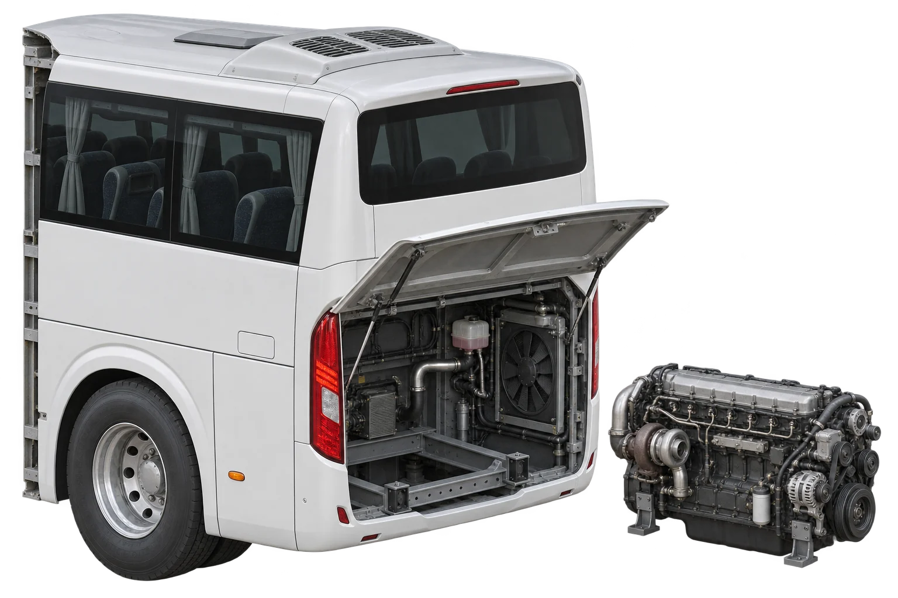
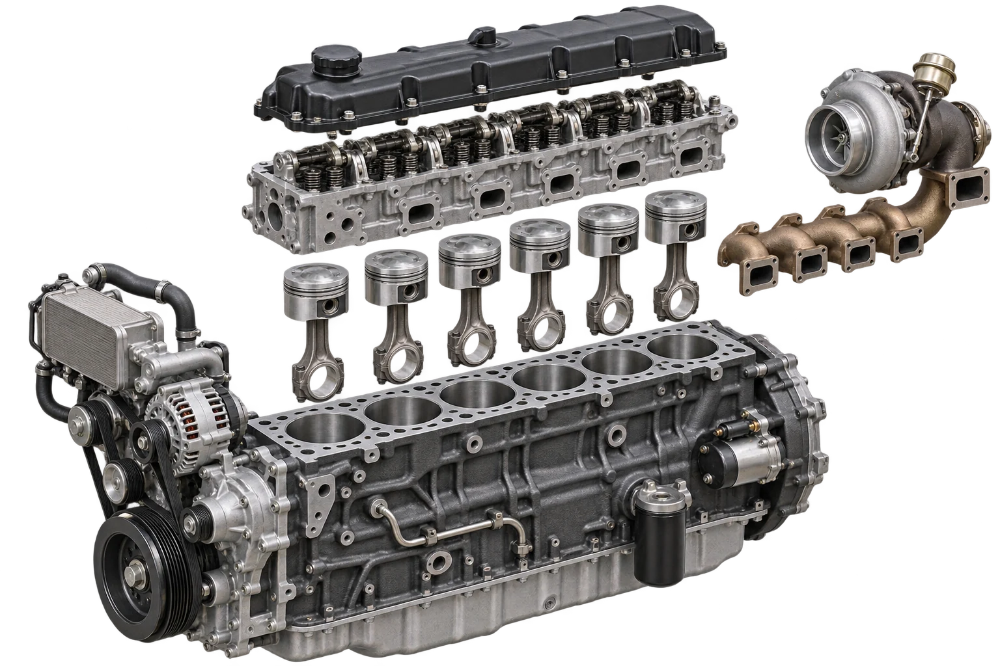

Адрес мастерской
Ленинградское
шоссе, 99
Перед выездом уточните населённый пункт, время визита и точку въезда.
01 Обслуживание транспорта
Техническое обслуживание, диагностика и ремонт. Запланируйте визит для одной машины или обсудите график работ для автопарка.

Иллюстрация задней секции автобуса
Моторный отсек. У этого автобуса двигатель установлен сзади. К нему подходят через поднятый сервисный люк.

Иллюстрация шестицилиндрового дизельного двигателя
Головка блока. В ней находятся клапаны, которые впускают воздух и выпускают отработавшие газы.

02 От осмотра к ремонту
Ошибка, шум или вибрация помогают понять, где начать поиск. После осмотра можно обсудить, какие работы понадобятся и когда машина вернётся на маршрут.
03 Направления сервиса
Выберите задачу, чтобы узнать, что подготовить перед визитом.
Плановое ТО с учётом пробега, регламента и состояния машины.
Осмотр транспорта, когда появилась ошибка, вибрация, шум или изменилась работа машины.
Ремонт по итогам осмотра или по задаче, с которой вы уже обращались на диагностику.
Обсудите обслуживание нескольких машин с учётом графика рейсов.

04 Порядок визита
Выберите удобное время. После осмотра обсудите перечень работ, детали и срок.
Укажите модель, пробег и задачу. Для автопарка — количество машин и доступные даты.
До визита согласуйте время и въезд. Привезите результаты диагностики, если они есть.
После осмотра уточните перечень операций, сроки и наличие деталей.
Сверьте выполненные работы и согласуйте, когда можно забрать машину.
05 Приём транспорта
Сообщите модель, пробег и задачу. Для автопарка добавьте количество машин и удобные даты.
Адрес мастерской
Перед выездом уточните населённый пункт, время визита и точку въезда.
Перед визитом
Достаточно марки и модели, пробега и краткого описания задачи. Если есть код ошибки, добавьте его.
Предварительную оценку уточняют по задаче. Если причина неисправности неизвестна, сначала нужен осмотр.
Да, в форме есть вариант «Автопарк». Укажите количество, модели и подходящие даты.
Адрес — Ленинградское шоссе, 99. Населённый пункт и точку въезда нужно подтвердить перед визитом.